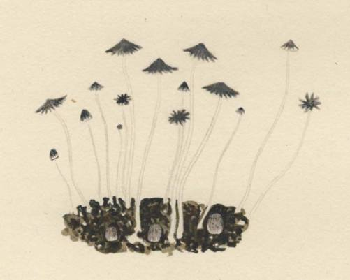

Here follow in the original tongues the various texts relating to the use of inebriating mushrooms by Indians in Mexico in the 16th and 17th centuries. Each passage is keyed to the corresponding translation on pp. 218-28. For the translations from the Spanish and French the authors are solely responsible.
[1]
… los estrangeros les dieron a coiner hongos montesinos que se embriagan con ello, y con esto entraron a la danca. [Folio 1251, H. P. Kraus ms.]
[2]
Acabado el sacrificio, y quedando las gradas del templo y patio banadas de sangre humana, de alii iban todos a comer hongos crudos, con la cual comida salian todos de juicio y quedaban peores que si hubieran bebido mucho vino; tan embriagados y fuera de sentido que muchos dellos se mataban con propria mano, y con la fuerza de aquellos hongos, vian visiones y tenian revelaciones de lo por venir, hablandolos el demonio en aquella embriaguez.
[3]
Tenian otra manera de embriaguez que los hacia mas crueles: era con unos hongos 6 setas pequenas, que en esta tierra los hay como en Castilla; mas los de esta tierra son de tal calidad, que comidos crudos y por ser amargos, beben tras ellos 6 comen con ellos un poco de miel de abejas; y de alii a poco rato veian mil visiones y en especial culebras; y como salian fuera de todo sentido, pareciales que las piernas y el cuerpo tenian llenos de gusanos que los comian vivos, y asi medio rabiando se salian fuera de casa, deseando que alguno los matase; y con esta bestial embriaguez y trabajo que sentfan, acontecia alguna vez ahorcarse, y tambien eran contra los otros mas crueles. A estos hongos llamanles en su lengua teunamacatlh,1 que quiere decir carne de Dios, o del Dernonio que ellos adoraban y de la dicha manera con aquel amargo manjar su cruel Dios los comulgaba.
[4]
… y sabe e vio que habra 14 anos que en una fiesta vio beodos a los dichos Don Francisco e Don Juan e habian tornado nanacates para invocar al demonio como lo hacian los antepasados, e que es publico y notorio que siempre cuando no llueve o cuando se cogen los maices Hainan al diablo e que cuando cogen los maices hacen sus borracheras… [p. 38]
[5]
… Tributauanle [al Senor de Mexico] cada ues que se lo pedian dos o tres cargas de mantas de nequen, que se haze de un arbol que se llama maguei, y dauan ongos con que senborrachan y ocote …
[7]
… alii, qui mortem ingesti non inferant, sed amentiam aliquandiu permanentem, incondito quodam risu testatam, inducant, quos Teyhuinti vocare mos est, fulvi, acres, et non ingrati cujusdam viroris. Sunt et alii, qui citra risum nihil non versari sub oculos cogant, velut bella, et dsemonum simulacra, atque alii non minus a viris hisce principibus per sua prxcipue festa, et convivia exoptati, et pretio maximo, et pervigili cura conquisiti, quam immanes, atque horrendi: quod genus fuscum est, et quadam acrimonia prasditum.
[8A]
La primera cosa, que se comja en el combite: eran vnos hungujllos negros que ellos llaman nanacatl, emborrachan: y hazen ver visiones, y aun provocan a luxuria: esto comjan ante de amanecer y tambien beujan cacao, ante de amanecer: aquellos hungujllos comjan con mjel, y quando ya se comen9avan a escalentar con ellos, comecavan a baylar: y algunos cantauan, y algunos llorauan: porque ya estauan borrachos, con los hungujllos: y algunos no querian cantar, sino sentauanse, en sus aposentos: estauan alii como pensatiuos, y algunos vian en vision que se murian, y lloraron: otros vian en vision, que los comja alguna bestia fiera: otros vian en vision, que captiuavan en la guerra: otros vian en vision que avian de ser ricos: otros vian en vision que avian de tener muchos esclavos: otros vian en vision que a via de adulteral [adulterar]: y les avian de hazer tortilla la cabe^a por este caso: otros vian en vision, que avian de hurtal [hurtar] algo: por lo qual, lo aujan de hazer tortilla la cabeca: otros vian en vision, que avian de matar a alguno y por el caso, aujan de ser muertos: otros vian en vision, que se ahogauan en agua: otros vian en vision, que vivirian, y murieran en paz: otros vian en vision que cayan de alto, y murieran de la cayda: todos los acontecimjentos desastrados, que suelen auer los vian en vision: otros vian que se sumjan en el agua, en algun remolino. Desque auja passado la borrachera de los hungujllos hablauan los vnos, con los otros, cerca de las visiones que avian visto. [BOOK ix, Flor. Codex, fol. 3ir-3iv; Chap, xm]
[8a]
Vel iacattiiui in tequaltiloia nanacatl in qujquaia, icoac in quitoaia tlatlapitzalizpan aiamo tie tlaqualli qujquaia, can oc iio in cacahoatl conia ioaltica. Auh in nanacatl necuio in quiquaia: in icoac ie intech qui9a nanacatl, in oncan mitotia, oncan choca: Auh in cequintin in oc iniollo quimati, in oncan inieian motlalia caltech aocmo mitotia, ca oncan oaltolotimotlatia. In aca conmottilia ie miquiz oncan chocatica: in aca conmottilia iaumiquiz: in aca conmottilia tequanqualoz: in aca conmottilia tlamaz iauc: in aca conmottilia iehoatl in mocuilltonoz in motlacamatiz in aca conmotilia tecohoaz tlacooa iez, in aca conmottilia tetlaximaz, tetzotzonaloz tetepacholoz: in aca conmottilia ihichtequiz no tetepacholoz : in aca conmottilia tequatepachoz quitzacutiaz in aca conmottilia atlan miquiz: in aca conmottilia iehoatl in iuian iocosca monemitiz ipan miquiz: in aca conmottilia tlapanco oaluetziz mictiuetziz. J 9390 quesquich tepan mochioaz: mochi oncan conittaia, in anoco ilaquiloz. Auh in oquincauh nanacatl: mononotza quimolhuia in tlein oconmottilique.
[9A]
Tabien tenjan gran conoscimjento de yeruas, y rayzes, y conoscian sus calidades, y virtudes; ellos mesmos descrubrieron, y vsaron primero la rayz que llaman peyotl: y los que la comjan, y tomauan: La tomauan en lugar de vino. Y lo mjsmo hazian de los que llaman nanacatl: que son los hongos malos, que emborracha, tambien como el vino: y se iuntaua en vn llano despues de lo auer comjdo, donde baylauan, y cantauan de noche, y de dia a su plazer: y esto el primero dia, y luego el dia sigujente llorauan todos mucho, y dezian: que se limpiauan, y lauauan los ojos, y caras con sus lagrimas. [Book x, Flor. Codex, fol. 122 v]
[10A]
Ay otra yerva, como turmas de tierra, que se llama peyotl: es blanca, hazese hazia la parte del norte: los que la comen o beben ven visiones espantosas, o de rrisas, dura este emborrachamjento dos o tres dias, y despues se qujta … [Boos xi, Flor. Codex, fol. I29v-i30r]
[9B]
loan qujximati in xiujtl, in tlanelhoatl in quenamj, in quen ihiio, iehoantin in tlaiximach in mjtoa peiotl, vctli ipan in qujpoa, in anoco nanacatl, mocentlalia cana ixtlaoacan, monechicoa : vncan mjtotia, cujca ceioal, cemjlhujtl : auh in jmuztlaioc, oc ceppa mocentlalia choca, cenca choca, qujl mjxpaca, ic qujchipaoa in jmjxtelolo.
[10B]
Peiotl: inin peiotl iztac: auh $an yio vmpa in mochioa in tlacochcalcopa, in teutlalpa in mjtoa mjctlanpa. In aqujn qujqua in, in anoco quj; itech qujca, iuhqujn nanacatl: no mjec tlamantli qujtta in temamauhti, anoco tevetzqujti: aco cemjlhujtl, anoco omjlhujtl in jtech qujca, …
[11A]
Ay vnos hongujllos en esta tierra que se llama, teonanacatl : crianse debaxo del heno en los campos o paramos son redondos, y tiene el pie altillo y delgado, y redondo comjdos, son de mal sabor dana la garganta, y enborracha son medicinales contra las calenturas y la gota anse de comer, dos o tres no mas : los que los comen veen visiones, y sienten vascas del coracon, y veen visiones a las vezes espantables y a las vezes de rrisa, a los que come muchos dellos provocan a luxuria y aunque scan pocos. Y a los mocos locos o traviesos, dizenles que an comjdo nanacatl. [BooK xi, Flor. Codex, fol. I3ov-i3ir.]
[11B]
Nanacatl: mjtoa teunanacatl, ixtlaoacan, 9acatzontitlan in mochioa, quamalacachton, xopiazton, chichicacococ, tozcacococ: teivinti teiollo malacacho, tetlapololti : atonaviztli. coaciviztli ipaio, can ontetl, etetl in qualonj, teiolpatzmjcti, tetequjpacho, teama, techololti, temamauhti, tetlatiti. In oqujn mjec qujqua mjec tlamatli qujtta temamauhti, ano9O tevetzqujti: choloa, momecanja motepexivia, tzatzi, momauhtia. Injc qujqua necutli ipan: njnanacaqua, njnonanacavia. In mopoanj, in atlamatinj cuecuenotl: ipan mjtoa monanacavia.
[12]
Y el caso fue que a el habia venido un indio natural del pueblo de Tenango, gran maestro de supersticiones, y se llamaba Juan Chichiton, que quiere decir perrillo, el cual habia traido los hongos colorados que se cogen en el monte, y con ellos habia hecho una gran idolatria, y antes de decirla, quiero explicar la calidad de los dichos hongos, que se llaman en la. lengua mejicana Quautlannamacatl, y habiendo consultado al licenciado don Pedro Ponce de Leon, el gran Ministro y maestro de los maestros, que dije en el capitulo II, me dijo que estos hongos eran pequenos y dorados, y que para cogerlos iban al monte los sacerdotes y viejos deputados Ministros para estos embustes, y estaban casi toda la noche en oracion y deprecaciones supersticiosas, y al amanecer, cuando comenzaba cierto vientecillo que ellos conocen, entonces los cogian, atribuyendoles deidad, y teniendo el mismo efecto que el ololiuqui 6 el peyote, porque comidos 6 bebidos, los embriaga y priva de sentido, y les hacen creer mil disparates. Este, pues, Juan Chichiton, habiendo cogido los hongos una noche, en la casa donde se juntaron con ocasion de la fiesta de un santo, el santo estaba en el altar, y los hongos con el pulque y con el fuego debajo del altar, anduvo toda la noche el teponastli y el canto, y habiendo pasado la mayor parte de ella el dicho Juan Chichiton, que era el sacerdote de aquella solemnidad, les dio a todos los circunstantes que se habian juntado a la fiesta a comer de los hongos como a modo de comunion, y a beber del pulque, y rematar la fiesta con abundante cantidad de pulque; que los hongos por su parte, y el pulque por la suya, los saco de juicio que fue lastima.
[13]
… Ce diet seigneur de Tezcuq … Il pourtoyt gran reverence aux dieux et avoyt grand soing des temples et ceremonies; il ordona aussi que les jeunes homines ct filles dancessent aux temples … leur sement le temple de roses et de fleurs et dan^ant tousiours davant eux tant ceux de la vile que les prochains voisins, les quels le diable abeusoyt leur faisant manger quelque herbe quils noment nauacatl la quelle les faisoyt hors de sens et voyr beaucoup de visions.

- This reading of the name is found in the Rich ms. in the New York Public Library, which is a transcript of an early ms. in the Escorial. The scribe who penned the Rich ms. evidently had trouble in deciphering the original; he was certainly striving to arrive at the word that appears, as we shall see, in Sahagun as teonandcatl.
See p. 24 of Rich ms.